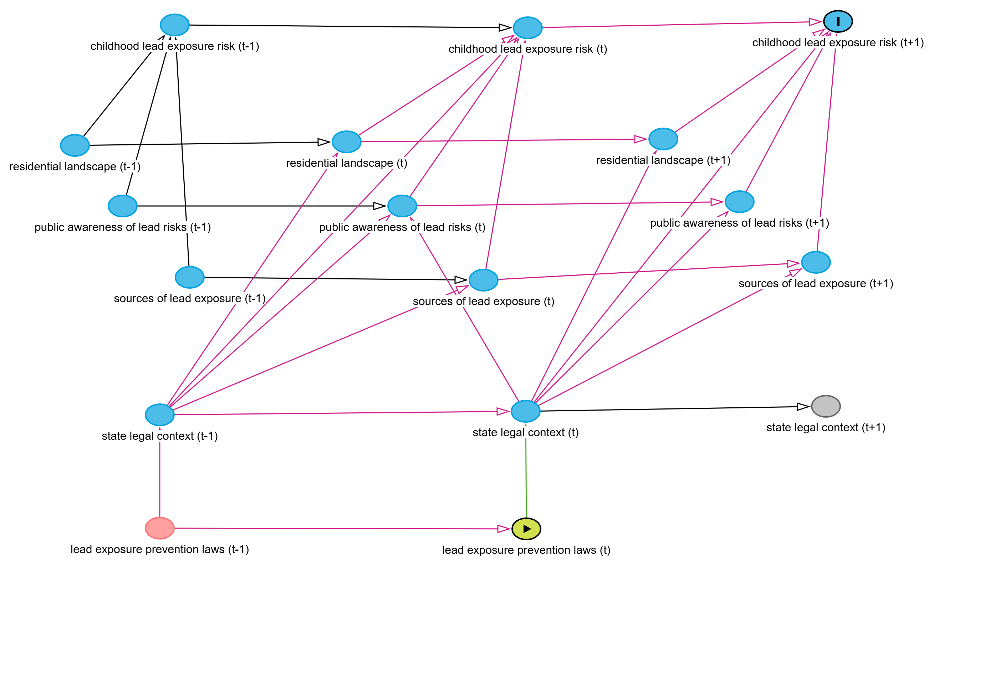
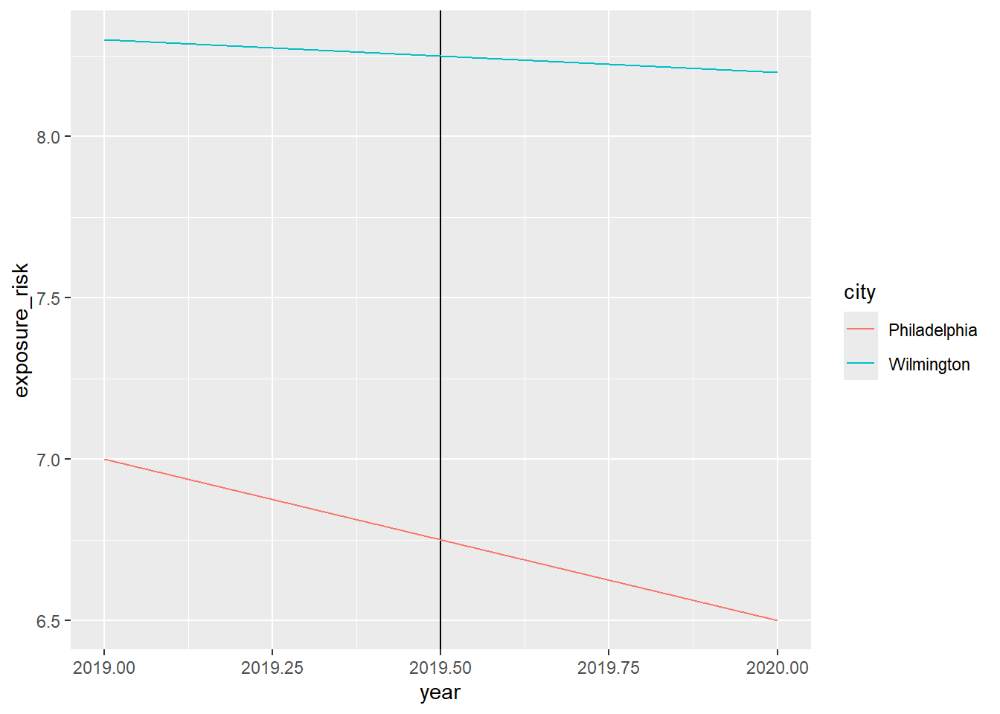

Lead exposure is particularly harmful to young children. Lead exposure can damage children’s brains and nervous systems, slow their growth and development, and cause learning, behavior, hearing, and speech problems (cdc_lead_2025?). In 2016, over half a million children in the United States had elevated blood lead levels, and millions more live in homes with lead paint (jacobs_childhood_2023?). An advocacy campaign in Philadelphia over the past two decades was successful in securing tens of millions of dollars in funding to address the issue and also resulted in passage of several laws aiming to reduce lead exposure for residents (pccy_getting_2006?).
In 2011, legislation was passed in Philadelphia requiring landlords to acquire certification that their residential property is lead free or lead safe before it may be rented to a tenant; however, dwellings where children ages 6 and under do not reside were exempted from the requirement (criterion_laboratories_philadelphia_2013?).
In 2019, legislation was passed expanding the lead testing requirement to all residences in the City of Philadelphia, with the exception of college dorms. Legislators stated that the 2011 legislation was largely ineffective, achieving only 25% compliance from landlords, and that it made obtaining rental housing more difficult for families with young children (philadelphia_city_council_philadelphia_2019?). In addition to the bill requiring universal testing of rental properties, legislation was passed requiring lead and water quality testing as well as any required remediation in schools and daycare facilities. Lastly, legislation was also passed requiring physicians to conduct blood lead level testing for young children (city_of_philadelphia_lead_2023?).
Major progress has been made in reducing lead exposure risk in Philadelphia. Between 2019 and 2022, over 82,000 rental properties were certified as lead free or lead safe and all public schools (District and charter) have conducted water quality testing and, if needed, remediation. In the most recent year of publicly available data, 2022, first-time elevated blood levels were at their lowest-ever observed level (6%) in young children, which is roughly half the 2012 rate (12%) (city_of_philadelphia_childhood_2024?).
To what degree should the city’s success in reducing childhood lead exposure be attributed to the passage of recent laws requiring lead testing in homes and schools? If the laws have had a major effect in reducing childhood lead exposure, and we can demonstrate that, such evidence would be valuable to other local governments seeking to take effective action to protect children as well as to advocates seeking to push for meaningful action on the issue.
Program overview
Provide in-depth background about the program. Include details about (1) when it was started, (2) why it was started, (3) what it was designed to address in society. If the program hasn’t started yet, explain why it’s under consideration. (≈300 words)
Children can be exposed to lead in several ways. Touching, swallowing, or breathing in lead or lead dust exposes children to lead (cdc_lead_2025?). For example, children might inhale dust from crushed flakes of lead paint, ingest lead paint flakes chipping near a windowsill, or drink water that flows through old, degrading lead pipes exposing them to potential lead poisoning.
Philadelphia’s DPH reported that over 55% of the properties that poisoned children with lead exposure were rental properties (pccy_fact_nodate?).
While important steps were taken in the 2000s and early 2010s, there were known gaps with the laws and prevention strategies. Specifically, children do not only spend time in the house in which they primarily reside. Children spend time with relatives, family friends, etc. and can be exposed in those environments where there were no requirements for lead safe certification. Additionally, many landlords may be unaware (intentionally or not) of the ages of the children that reside in the homes. Requiring the landlord to identify the age of the children and then act accordingly did not achieve significant compliance with lead safe certification requirements. Furthermore, legislators noted that families with children face discrimination and additional challenges in obtaining rental housing and this additional requirement added to that burden (philadelphiacitycouncil2019?). Lastly, children can be exposed in school and day care environments where there were not strong requirements and enforcement.
As such, the legislation in 2019 sought to address these gaps by expanding the breadth of the testing and remediation requirements to cover all residential units (exempting college dormitories), public schools, and daycare facilities.
Program theory and implementation
Program theory and impact theory graph
There are several assumptions underlying the legislation.
A universal requirement for residential properties will increase compliance and enforcement of laws related to lead testing, remediation, and notification.
A universal requirement for residential properties will eliminate the specific burden placed on landlords seeking to lease to families with young children, reducing discrimination towards those families as they search for rental homes.
Certified lead testing can effectively identify lead hazards.
Increased identification of lead hazards by certified individuals will lead to increased remediation of lead hazards.
Publication of information regarding property and landlord compliance with laws, childhood lead exposure levels, and school testing will support monitoring and compliance with existing laws (in part by informing the public, media, and advocates).
Strong financial penalties and a private right of action for tenants will empower tenants and legal aid organizations and increase compliance with the laws.
Requiring physicians to test young children for lead exposure will increase the screened population and more accurately capture the degree of childhood lead exposure in the city.
Requiring DPH to conduct testing at the request of owners or upon receipt of credible reports of lead poisoning will increase testing and identification of lead hazards.
While earlier advocacy and city efforts in the 2000s focused on improving the city’s response to cases of lead poisoning and addressing known issues (such as the backlog of poisonous properties), the 2019 legislative package focused more on universal prevention than response to crises. I have attempted to distill the program theory in the below graph:
[pic to add]
Logic model
Inputs
Laws
Bill No. 180936-A - establishes lead safe certification requirements for rental licenses, penalties, conditions for testing by the Philadelphia Department of Public Health (DPH), and other requirements.
Bill No. 100011-A - establishes requirements for landlords to provide valid lead safe/free certification to tenants and DPH, protections and private right of action for tenants to address non-compliance.
Bill No. 180937-A - requires physicians to conduct testing of blood lead levels in young children.
People/organizations
Department of Public Health staff - individuals working for the Department of Public Health responsible for responding to requests for testing, publishing information on landlord compliance, and more. Provide care/resources to families dealing with lead poisoning / hazards. Also assist in connecting landlords to resources to pay for testing and remediation.
Landlords - individuals seeking to lease residential property in the City of Philadelphia responsible for ensuring properties receive inspections and valid certification of lead free or lead safe status; providing certifications to tenants and DPH.
Tenants - individuals seeking to lease residential property in the City of Philadelphia, granted the private right of action to sue landlords if non-compliant with lead safe laws and regulations.
Young children - children under the age of 6, for whom blood lead testing by physicians is required.
Physicians.
Lead inspectors - An individual certified by the City’s DPH or state to conduct comprehensive lead inspections and risk assessments (based on state regulations) or is certified by the EPA and trained as a lead dust sampling technician.
Lead remediators - Individuals qualified to perform lead remediation (DPH will maintain a list on its website).
Legal aid organizations - Organizations focused on providing legal services to low-income residents in Philadelphia (e.g. Community Legal Services, Philadelphia Legal Assistance, etc.).
Courts - Responsible for hearing cases regarding compliance with lead safe laws (e.g. Philadelphia Court of Common Pleas, Philadelphia Municipal Court, other Courts with jurisdiction). Also assist in connecting landlords to resources to pay for testing and remediation.
Funding
I’m not sure what level of detail or type of categorical articulation is helpful here - there are a variety of local, state, and federal governmental funds supporting this work, as well as local philanthropy, as well as private investments by landlords seeking to participate in the rental market, with presumably some cost of compliance being passed on to tenants as well.
Activities
Mandated DPH residential property testing.
Mandated physician blood lead level testing of young children.
Submission of lead safe certification to DPH by landlords.
Publication of information on the degree and details of childhood lead exposure in Philadelphia.
Publication of information regarding landlord, school, and daycare compliance with lead safe requirements.
Public notification of lead-related concerns to renters, families of school children, and the public.
Lead testing of residential properties.
Lead remediation work in residential properties.
Lawsuits against landlords for non-compliance with lead safety requirements.
Outputs
Number of residential units tested for lead.
Number of residential units certified as lead safe.
Number of residential units remediated, replaced, avoided, or deactivated.
Outcomes
Reduce childhood lead exposure.
Improve cognitive and physical health of Philadelphia children and residents.
Improve school performance for Philadelphia children.
Increase public awareness and access to information regarding lead exposure.
Equip advocates with information & infrastructure for future public safety campaigns.
Support ongoing monitoring and increase compliance with laws.
Empower tenants and legal aid organizations.
Outcome and causation
Main outcome
The main outcome for this evaluation is the lead exposure risk for children. I focus on this outcome for several reasons:
It is easier to measure than outcomes like “empower tenants” and “improve mental and physical health”;
It is more directly connected to the activities and outputs and less impacted by other policies that might be enacted (e.g. expanding health insurance access, funding tutoring programs); and
It is very important - children should be protected from exposure to toxic, harmful substances.
Measurement
Below I list several potential attributes connected to my main outcome (lead exposure risk for children) and then suggest a measurable definition, ideal measurement, feasible measurement, and measurement of program effect for the attribute: breadth of exposure.
Potential attributes:
Severity of exposure
Frequency of exposure (e.g. repeated exposure, prolonged exposure)
Breadth of exposure (proportion of children exposed)
Absolute number of children exposed
Exposure sources
Time between exposure and identification/treatment
Lead remediation work completed in homes
Lead remediation work completed in schools
Lead free or lead safe certified rental homes
Breadth of Exposure
Measurable definition: The percentage of children in a given area with a blood lead level of greater than or equal to 3.5 ug/dL (micrograms per deciliter) in a given calendar year (cdc2025?)
Ideal measurement: Ideally, every child residing in Philadelphia would receive at least one blood test annually measuring the level of lead in their blood.
Feasible measurement: While it is certainly possible, currently, despite requirements that physicians conduct blood tests for young children, only 36% of three year-olds were tested in 2022, so universal annual testing is not a reality on the ground. That said, 80% of three year-olds had been tested at some point in their lives. Perhaps it would make sense to do some sort of rolling cohort type thing (similar to how graduation rates are calculated and compared over time) - e.g. the percentage of 3-year olds who have at any point experienced blood lead levels at or above 3.5 ug/dL - and then compare each age group across years - e.g. 2022 3-years olds v 2023 3-year olds - do we see a decrease in the percentage of children exposed to lead? The reason I think something like this might be superior is that it would give you a greater degree of coverage of the comparison groups (e.g. 80% plus of each group will have been tested) and they will have had the same number of years (3) for potential exposures. That said, it might seem a bit convoluted or hard to explain.
Measurement of program effect: Perhaps we could look at the change in the percentage of children exposed following implementation of the 2019 legislative package and compare it to similar cities (or imagined/constructed cities) with similar context (e.g. deep poverty, old housing stock, old school buildings, weather, etc.). It might be tricky if other places have significantly higher or lower testing levels as well - similar to how looking at SAT or AP scores from some states shows artificially inflated numbers due to low participation rates.
Causal theory
Given your measurement approach, describe and draw a causal diagram (DAG) that shows how your program causes the outcome. Note that this is not the same thing as the logic model—you’ll likely have nodes in the DAG that aren’t related to the program at all (like socioeconomic status, gender, experience, or other factors). The logic model provides the framework for the actual implementation of your program and connects all the moving parts to the outcomes. The DAG is how you can prove causation with statistical approaches. (≈150 words)
What factors change (or could change) the risk for children to be exposed to lead over time (other than the policy in question - requiring residential rental unit lead-safe certification)?
Sources of Lead
To answer this we can consider the different potential sources of lead exposure for children - lead in homes (e.g. flaking lead paint, lead in water from an old pipe - both are possibilities in older homes prior to the ban on use of lead in home construction). Additionally, lead in the soil could be a source of exposure for children. The amount of lead in water from a given outlet is correlated with the future amount of lead in the water from that outlet - barring remediation, we would expect to see similar levels of lead exposure. So past sources predict current sources and current risk, to a degree.
Sub-elements:
lead in water,
lead in buildings (residences here),
lead in soil
These also can be impacted by laws - e.g. requiring lead-safe certification of rental units is hoped to have an effect of reducing the lead in homes.
Changing Knowledge & Behavior
From there, we must consider what effects the various sources of lead - either removing them or adding to them - as well as what might effect children’s exposure and proximity to those sources (e.g. if parents become more knowledgeable about the harms of lead paint exposure may take additional efforts to remove or paint over old flaking paint - reducing their children’s risk of exposure).
These can also be impacted by laws - both by general awareness campaigns and funding to highlight the issue, and by, for example, doctors being required to do testing, informing parents about the risk, and, more specifically, publishing information on compliance of rental units online.
Sub-elements:
public awareness of lead exposure risks, and
housing preferences.
Changing Residential / Rental Landscape
Additionally, if residential units become less proximate to sources of potential exposure - e.g. industrial sites, hazardous waste sites, landfills, high traffic areas - which release lead and other toxins into the environment - the risk of childhood exposure is likely to decrease as children become farther from exposure sites.
Additionally, factors like - the proportion of rental properties to owner-occupied properties is likely to effect not necessarily proximity to lead exposure sources - but the efficacy of the treatment (legislation requiring lead safe testing for rental license acquisition).
Lastly, the age of housing stock as well as the pace of housing unit replacement within a given community is also likely to impact the exposure risk over time.
These can also be impacted by laws, though perhaps less so than some other factors - perhaps some units are sold or replaced because of the laws.
Sub-elements:
age of housing stock,
replacement rate of housing stock,
proximity of housing stock to sites of risk
Legal Context
State preemption of necessary elements (e.g. Georgia’s ban on local governments establishing registries of rental properties) would likely weaken if not completely nullify the impact of local legislation that may be dependent on something like a rental registry from which to issue rental licenses. In this way it acts as a potential moderator on the treatment in the DAG.
Additionally, previous laws may also lay the groundwork for the current legislative package under consideration, and also impact childhood exposure risk in the past and present.

Hypotheses
I predict that the 2019 legislative package will reduce the percentage of children exposed to lead by approximately 20% (e.g. going from 10% of children being exposed lead by the age of five to 8% of children being exposed to lead by the age of five). Given the change in exposure rate (~-6% in 10 years, or a 50% reduction) from 2012 to 2022 - this seems possible (cityofphiladelphia2024?).
Data and methods
Identification strategy
Also briefly describe what kinds of threats to internal and external validity you face in your study.
Regression discontinuity also doesn’t seem feasible here - we don’t have a clear cutoff applied to treatment (passage of a law) that makes sense.
IVs - I can’t think of anything that would essentially stand in for a randomizing treatment effect a la malfunctioning submarine torpedos for promotion or special radio towers for Sesame Street.
Which leaves me with Differences-in-Differences (DD). I suppose I would look at some nearby cities (e.g. Wilmington, Camden, Baltimore, Newark, New York City) and try to find one (or several) that have similar trends with regards to the percentage of children that had newly identified lead exposures in a given year for the time period leading up to the legislation (pre-2019).
My goal is to find a city or couple cities that satisfy the requirements* laid out in the Effect -
“There’s no particular reason to believe the untreated group would suddenly change around the time of treatment.”
e.g. the comparison city should not be enacting similar lead-prevention legislation, or say undertaking a massive atypical residential construction spree
The treated group and untreated groups are generally similar in many ways.
e.g. the cities should have similar age housing stock, similar levels of industrial and waste exposure in the cities and proximity of residential housing to those risks, similar levels of poverty and rental housing
The treated group and untreated groups had similar trajectories for the dependent variable before treatment.”
e.g. for the years before the legislation, the other city should also have a downward trend (like Philadelphia) in terms of it’s exposure rate.
DD deals with selection bias by saying - one group may have opted to do the treatment - but we are going to make a case that the other group, though they didn’t select the treatment, was very similar to the treatment group - for the reasons noted above - and as such, we think the trend of the control group serves as a useful comparison and predictor for what would’ve happened with the treatment group had the treatment (legislation) not occurred.
DD isolates the causal outcome by saying (e.g. assuming Camden was a good, similar comparison city) - we are going to create a counterfactual for what would’ve happened in Philadelphia, by looking at the before and after 2019 eras in Camden and comparing the change in lead exposure risk for children there to the change in exposure risk for children in Philadelphia. Because these two cities were so similar and on the same path and Camden did nothing wild during that time period, it is reasonable to attribute the differences in differences between the two cities’ before and after risk levels to the treatment - in this case the 2019 legislative package enacted in Philadelphia.
Data
We will rely on data captured by local or state governments on city or county level data on childhood exposure risk to lead. Philadelphia’s Department of Health collects this data here. We will measure the percentage of children who are 6-years old who have been exposed to lead one or more times in their life while residing in the city.
Ideally we would access individual-level data on every test conducted on children by the local government.
Additional data we will consider, not for the causal analysis per se, but to make the argument for parallel trends would be information on housing stock trends and legislative changes related to these issues.
Synthetic analysis
Below I generate a fake data set for my treatment city (Philadelphia) and control city (Wilmington) before and after the treatment (2019) with data on the outcome of interest - childhood lead exposure rate.
The estimated effect using the DD model is that the legislative package reduced the risk by 0.4 percentage points.
lead_dd_table <-tibble(city =c("Philadelphia", "Philadelphia", "Wilmington", "Wilmington"), year =c(2019, 2020, 2019, 2020), exposure_risk =c(7.0, 6.5, 8.3, 8.2)) |>mutate(after = year >2019 )ggplot(data = lead_dd_table, aes(x = year, y = exposure_risk, color = city)) +geom_vline(xintercept =2019.5) +geom_line()

model_DD <-lm(exposure_risk ~ city + after + city * after, data = lead_dd_table)tidy(model_DD)
# A tibble: 4 × 5
term estimate std.error statistic p.value
<chr> <dbl> <dbl> <dbl> <dbl>
1 (Intercept) 7 NaN NaN NaN
2 cityWilmington 1.30 NaN NaN NaN
3 afterTRUE -0.5 NaN NaN NaN
4 cityWilmington:afterTRUE 0.400 NaN NaN NaN
#write_csv(lead_dd_table, "data/diff_diff.csv")
Conclusion
The findings from this analysis would help justify the value and cost of the legislation and the requirement to have all rental properties achieve lead safe certification - and, if positive findings are discovered - for example an effect of reducing the risk of childhood lead poisoning by a not insignificant amount (e.g. a 10% reduction or 1 percentage point reduction) - then that could also help justify other cities enacting similar requirements - and reducing the number of children that are poisoned by lead!
A tricky thing with this analysis is that Philadelphia has enacted several waves of legislation aiming to prevent lead exposure for children - it will be hard to suss out the effect for just a single or couple bills passed in a given year. Also, the legislative packages are connected - the later ones could not have been enacted without those that came before them - it may not necessarily be true that other cities have to take the same path - but it also may be the case that there are certain benefits to staggered implementation in terms of increasing likelihood of legislative success in the future.